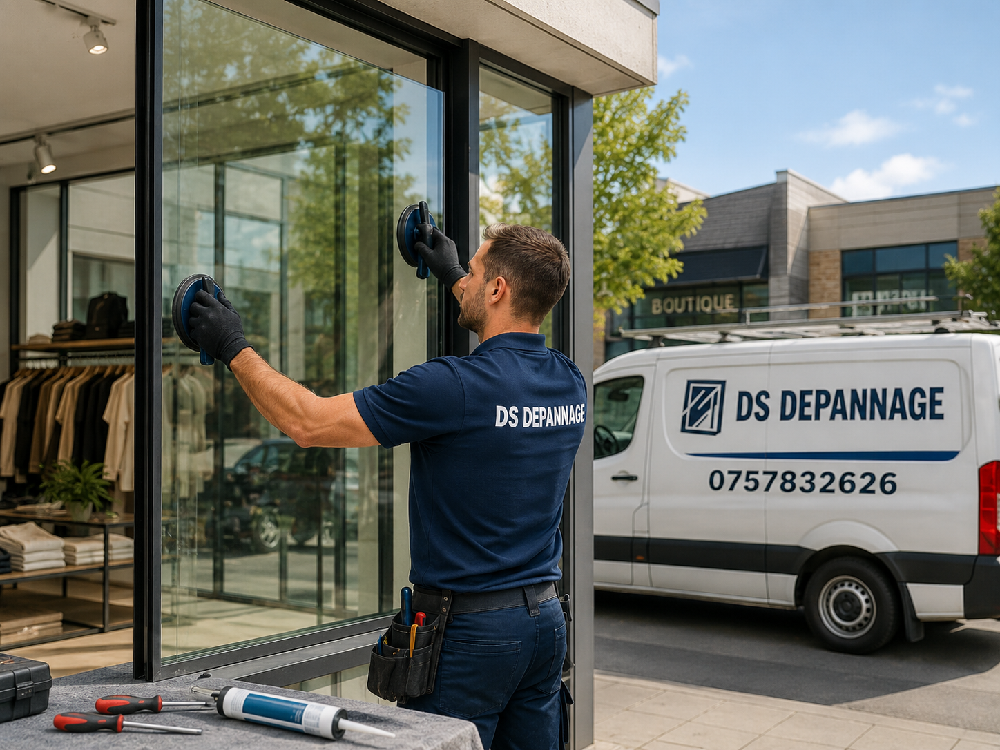

Sécuriser le passage
Les éclats et zones instables sont traités pour éviter un accident client ou salarié.
Vitrine cassée, porte vitrée ou local exposé : mise en sécurité et devis clair
Une vitrine de commerce doit protéger le local, présenter l'activité et résister aux passages quotidiens. Lorsqu'elle casse ou se fissure, le dépannage doit être rapide mais surtout maîtrisé.

Les éclats et zones instables sont traités pour éviter un accident client ou salarié.
Une fermeture provisoire peut fermer le magasin en attendant la vitrine.
Dimension, épaisseur, poids et type de verre guident le devis.
La pose définitive doit être propre, droite et cohérente avec la devanture.
Une vitrine cassée n'est pas une petite vitre ordinaire. Elle est plus grande, plus lourde, plus exposée et souvent située dans une zone de passage. Le risque concerne autant les personnes que le stock, la caisse, les équipements et l'image du magasin.
La première intervention peut consister à sécuriser l'ouverture, retirer les morceaux dangereux, poser une protection provisoire et prendre les mesures. Le remplacement définitif dépend ensuite du type de verre : clair, feuilleté, trempé, épais, sécurit ou vitrage spécifique selon la devanture.
À Évreux, cette page cible les commerces, boutiques, bureaux ouverts au public, restaurants, agences, salons et locaux professionnels ayant une façade vitrée. L'objectif n'est pas de promettre une réparation standard, mais de proposer une solution adaptée à la taille et à l'usage de la vitrine.
Une devanture doit être traitée avec méthode, car le verre est visible, lourd et lié à la sécurité du local.
Une petite fissure peut sembler stable puis s'allonger avec les vibrations, le froid ou la chaleur. Sur une vitrine, l'attente augmente le risque de casse complète et peut inquiéter les clients.
Le vitrier vérifie la zone touchée, le type de verre et la tenue de l'ensemble. Selon le cas, une sécurisation ou une commande de remplacement est proposée.
Après une tentative d'intrusion, le vitrage peut être cassé, mais la menuiserie, la serrure de porte vitrée ou les profils peuvent aussi avoir souffert. Il faut donc sécuriser plus largement que le seul carreau.
La fermeture provisoire permet de protéger le local. Le remplacement définitif est ensuite préparé avec un vitrage adapté au commerce et à l'exposition.
Un commerce peut avoir plusieurs types de vitrage : une vitrine fixe, une porte d'entrée vitrée, une imposte, une cloison intérieure ou une baie donnant sur l'accueil. Chaque élément a son rôle et sa contrainte.
La porte vitrée demande une attention particulière car elle bouge, reçoit des chocs et peut intégrer une serrure, une poignée ou un ferme-porte. La vitrine fixe demande plutôt une pose stable, esthétique et résistante.
Le prix dépend de la taille, du verre, de la manutention et de la sécurisation.
Protection du local en attendant la pose définitive.
Devis selon dimensions, épaisseur et type de verre.
Selon vitrage, quincaillerie et état de la menuiserie.
Sécurisation, retrait des morceaux dangereux et préparation du remplacement.
Pour une demande plus large, voir vitrier Évreux 27000. Si la vitrine doit être fermée vite, consultez urgence vitrier Évreux. Pour une fenêtre isolante, allez sur remplacement double vitrage Évreux.
Évreux centre, zone de la Madeleine, Nétreville, Navarre, Saint-Michel, axes passants et locaux professionnels selon disponibilité.
Il faut sécuriser le passage, éviter de toucher le verre instable et contacter un vitrier pour une mise en sécurité ou un remplacement adapté.
Oui, une protection provisoire peut être posée pour fermer le local et protéger l'activité en attendant le vitrage définitif.
Oui, la dimension, l'épaisseur, le type de verre et le poids de la vitrine imposent généralement un devis et une préparation sur mesure.
Oui, les portes vitrées de commerce, bureaux ou locaux professionnels peuvent être sécurisées et remplacées selon le type de vitrage et de menuiserie.
Indiquez l'adresse, la dimension approximative et si le commerce doit être sécurisé immédiatement.